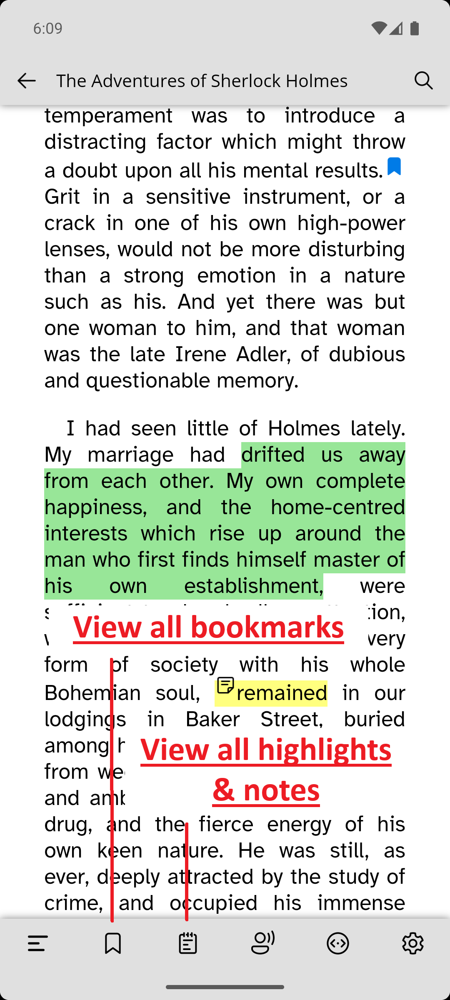

› How to add annotations (highlight, note, bookmark) in the book?
Once in the Reader, long press any word to open context menu with dictionary. Once the context menu is open, follow the steps to add annotations:
- Add highlight
- Using the text selection handle, select the desired text to highlight.
- Select the first icon 'Highlight' in the context menu.
- Choose the desired color to add highlight.
- Add note
- Using the text selection handle, select the desired text to want to add note to.
- Select the second icon 'Add Note' in the context menu.
- Add the desired note content.
- If you wish to change note color, click on the '3-dot' button to open color pane, and select the desired color of note.
- Click 'check' button to save the note.
- Add bookmark
- Select the third icon 'Add Bookmark' in the context menu to bookmark the current line.
Tap on the center of the screen to bring the reader controls, then tap the desired icon to view the highlights, notes or bookmarks on the book.

› Dictionary always returns 'No definition found'.
› How to change the dictionary?
If you are experiencing issues with the current dictionary, try switching to a
different one. The Wiktionary-based dictionary tends to be more reliable in most cases.
Steps to
change the dictionary are described with screenshots below.
› How Cloud Sync works?
› How to enable/configure cloud sync to sync books across Android and Windows devices?
Cloud Sync is a powerful tool to sync books across devices and platforms. The video below gives a detailed walkthrough of how cloud sync works and how to configure it correctly.
› Why do I have to purchase different premium version for Android and Windows
devices families?
Both Google Play and Microsoft Store enforces in-app purchases to be processed
through their respective platforms. This means we're not permitted to offer a custom single payment
method that works across both platforms. And unfortunately, there's currently no mechanism to sync
purchases between Android and Windows, hence premium version is platform-specific.
We understand this
might not be ideal, and we're exploring ways to make this process smoother in the future. For now, if
you'd like to use premium features on both Android and Windows, a separate purchase is required for each
platform.
That said, once you've made a purchase on Android, it will be available across all your
Android devices using the same account. Similarly, one purchase on Windows unlocks premium features
across all your Windows devices linked to that account.
We appreciate your understanding and support!
If you have any questions or need help, feel free to reach out to our support team.